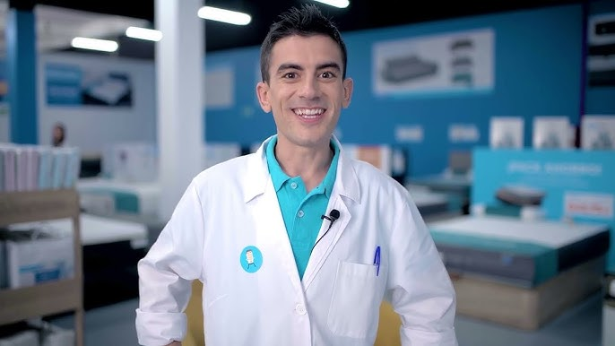

Conozca a Nuestro Equipo Médico
Profesionales dedicados y comprometidos con su salud y bienestar.

Dr. Lautaro Oyarzun
Cardiologo Especialista en Urgencias
Con más de 15 años de experiencia en medicina de urgencias, el Dr. Lautaro es experto en el manejo de pacientes críticos y en la estabilización de condiciones cardiovasculares. Su enfoque se centra en un diagnóstico rápido y preciso para garantizar el mejor tratamiento posible.

Dr. Claudio Perez
Médico Internista y Jefe de Triage
El Dr. Claudio lidera el equipo de clasificación de urgencias (triage). Su especialidad en medicina interna le permite tener una visión integral del estado del paciente, priorizando la atención según la gravedad y coordinando al equipo para una respuesta eficiente y humana.